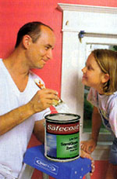
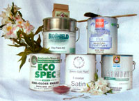

I have to admit that I like the smell of fresh paint. Having lived in a collec tion of motley old apartments and homes, I loved the way a couple of gallons covered over the scuffs and stains left by the last tenants and created a "new" living space. To me, the aroma of freshly painted walls signified a clean start. But as it turns out, what my nose didn't know could have been hurting me.
That "new-paint smell" is caused by volatile organic compounds (VOCs), a class of chemicals that evaporate readily at room temperature. These chemicals are found in some pigments and also are added to alkyd oil and (to a lesser extent) latex paints to provide certain desirable working qualities, like spreadability, or to improve durability. Low-level exposure to these chemicals may cause temporary health problems, such as headaches, dizziness or nausea. Higher exposure levels, such as with auto spray booth operators, and longer exposure times can cause permanent damage to the kidneys, liver, and nervous or respiratory systems.
To address some of these problems, more than 20 companies now manufacture low- and no-VOC paints that perform as well as their predecessors. A number of paint products can give your home a fresh start without compromising your health. Here's an overview of some low- and noVOC paints, and a few all-natural options you can choose from for both interior and exterior painting projects.
Although it can be made up of hundreds of different chemicals, paint still can be divided into two subcategories according to its primary solvent. In latex paints, water is the primary solvent; in alkyds, it's a petroleum solvent (oil). Latex paints, with much lower levels of VOCs, beat alkyds hands-down for safety. (Even the newly formulated alkyd paints use much more solvent than standard latex paints, and cleaning up brush es, rollers and spills after painting with alkyds requires additional solvents-latex paints clean up with soap and water.)
The biggest difference you may notice is with drying time: Low- and no-VOC paints dry a lot faster, and you'll need to work quickly so that you're always painting into a wet edge (painting over dried paint will leave a striped appearance). Because these paints tend to dry faster on rollers and brushes, cleanup may take a little longer.
First, don't confuse "low-odor" with "lowVOC." Fumes from some VOCs can be masked to make a low-odor paint, which means that what you can't smell still can hurt you.
And don't assume that all low-VOC paints are created equal. A "low-VOC" label on a can means the paint meets the EPA's maximum VOC-emission standards: Latex paints must contain less than 250 grams per liter (gm/l) of VOCs; alkyds can contain up to 380 gm/l.
When shopping for a safer paint, start by reading the label. Look for paints that have VOC levels of 150 gm/l or lower. Realize that pigments, typically dissolved in chemical solvents, and other additives, such as mildewcides and conditioners, contribute to the relative toxicity of the final paint mix.
In addition to choosing a low-VOC paint, pay attention to everything else that's in the can. Because the EPA's regulations primarily focus on reducing air pollution, other toxic chemicals that do not increase air pollution, such as heavy metals, are excluded from VOC calculations.
Besides solvents, heavy metals and crystalline silica (beach sand) are added to paint for color or texture. These ingredients aren't a problem when suspended in liquid paint, but they are considered carcinogens if inhaled (which can occur when sanding or scraping). Ammonia is used to inhibit bacteria and mold, and to help the paint "flow" off the brush or roller. And although none of the major paint companies use lead or mercury anymore, paints with mildewcide additives still contain trace amounts of formaldehyde. Formaldehyde is a respiratory irritant and potential carcinogen.
For this reason, chemically sensitive individuals need to be especially careful about using kitchen and bath paints that contain extra mildewcides.
Request a Material Safety Data Sheet (MSDS) from the paint store to get information on everything that goes into the paint. If the store can't provide one, check the manufacturer's Web site or call their customer help line.
Vibrantly colored paints predate modern VOC-based paints by several centuries. The old painted walls of many buildings in Italy, Egypt and Greece attest to the fact that combinations of natural resins, oils, clays, and mineral or plant pigments can be both durable and lightfast. Today, companies such as Bioshield and Sinan have refined those ancient recipes to offer a no-VOC line of plant- and earth-based paints and finishes. (The Old Fashioned Milk Paint Company offers a casein, or milk, paint made from a mixture of lime, earth pigments and milk protein.) Because you mix them yourself, these products offer more artistic creativity. They can be applied full-strength for regular coverage, or thinned to produce a washed effect.
Because natural paints don't use the same solvents that give other paints smoothness and uniformity, they can be a little trickier to apply and tend to give walls a more handcrafted appearance. Natural paints are sometimes sold as a powder, or the pigment is sold separately from a liquid base, requiring you to do the mixing. In these cases, you'll want to make enough for one full coat: Exactly matching one batch to the next is nearly impossible.
Natural paints are not always compatible with other paint products. Milk paint works well on new wood and plaster, but can pull off old paint if it's not adhered well. Milk paints applied over latex binder (used in drywall joint compound) may "crackle." Some natural paints also waterspot easily. For walls or furniture that require extra protection, you may need to apply a topcoat of varnish or polyurethane, which means an extra step and the potential for additional chemical exposure.
Here's a list of low- and no-VOC paint manufacturers. (Now all you need to do is find the perfect color for the master bedroom ...)
NO-VOC NATURAL PAINTS
Bioshield Paint
(800) 621-2591
www.bioshieldpaint.com
The Old Fashioned Milk Paint Co.
(978) 448-6336;
www.milkpaint.com
Sinan Co.
(530) 753-3104
www.dcn.davis.ca.us/go/sinan
LOW- AND NO-VOC LATEX PAINTS
American Formulating &Manufacturing Enterprises (Safecoat)*
www.afmsafecoat.com
Benjamin Moore & Co. (EcoSpec)
(800) 826-2623
www.benjaminmoore.com
Chem-Safe Products*
(210) 657-5321
www.ecowise.com/green/paint/chemsafe.shtml
ICI/Devoe Paint (Wonder-Pure)
(888) 681-6353
www.devoepaint.com
Duron Paints (Genesis)
(800) 723-8766;
www.duron.com
Frazee Paints (Envirokote)
(619) 276-9500;
www.frazeepaint.com
lCl/Glidden (LifeMaster)
(800) 454-3336
www.iciduluxpaints.com
Kelly-Moore Paint Co. (Enviro-Cote)
(888) 562-6567;
www.kellymoore.com
Miller Paint Co. (Acro)
(503) 233-4491;
www.millerpaint.com
McCormick Paint (Natural Odor-Free)
(877) 724-6855
www.mccormickpaints.com
PPG Architectural Finishes (PurePerformance)
(800) 441-9695;
www.ppgaf.com
Rodda (Horizon)*
(800) 452-2315;
www.roddapaint.com
Sherwin-Williams (Harmony)
(800) 474-3794
www.sherwinwilliams.com
*Sells low- or no-VOC exterior paint
|
Andersen-Ross/Brand X Pictures/Picture Quest Create a safer environment for your family by using natural or low- VOC paints in your home. |
 |
 |